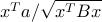
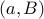
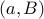

A Minimax Theorem with Applications to Machine Learning, Signal Processing, and Finance
SIAM Journal on Optimization, 19(3):1344–1367, November 2008.
Shorter version appeared in Proceedings
IEEE Conference on Decision and Control, pp.751–758, 2007.
This paper concerns a fractional
function of the form ,
where  is positive definite.
We consider the game of choosing
is positive definite.
We consider the game of choosing  from a convex set,
to maximize the function, and choosing  from a convex set,
to minimize it.
We prove the existence of a saddle point and
describe an efficient method, based on convex optimization,
for computing it.
We describe applications
in machine learning (robust Fisher linear discriminant analysis),
signal processing (robust beamforming, robust matched filtering),
and finance (robust portfolio selection).
In these applications, corresponds to some design variables to be chosen,
and the pair corresponds to the
statistical model, which is uncertain.
from a convex set,
to maximize the function, and choosing  from a convex set,
to minimize it.
We prove the existence of a saddle point and
describe an efficient method, based on convex optimization,
for computing it.
We describe applications
in machine learning (robust Fisher linear discriminant analysis),
signal processing (robust beamforming, robust matched filtering),
and finance (robust portfolio selection).
In these applications, corresponds to some design variables to be chosen,
and the pair corresponds to the
statistical model, which is uncertain.